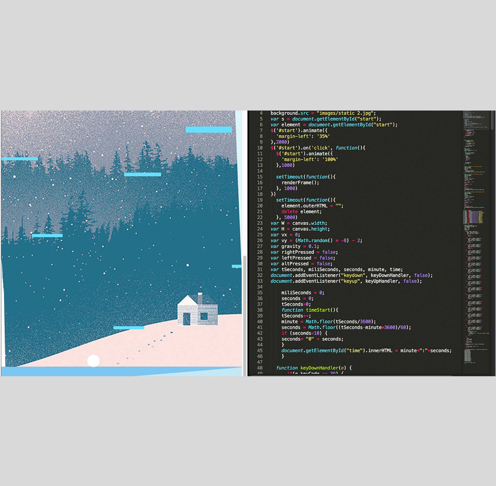
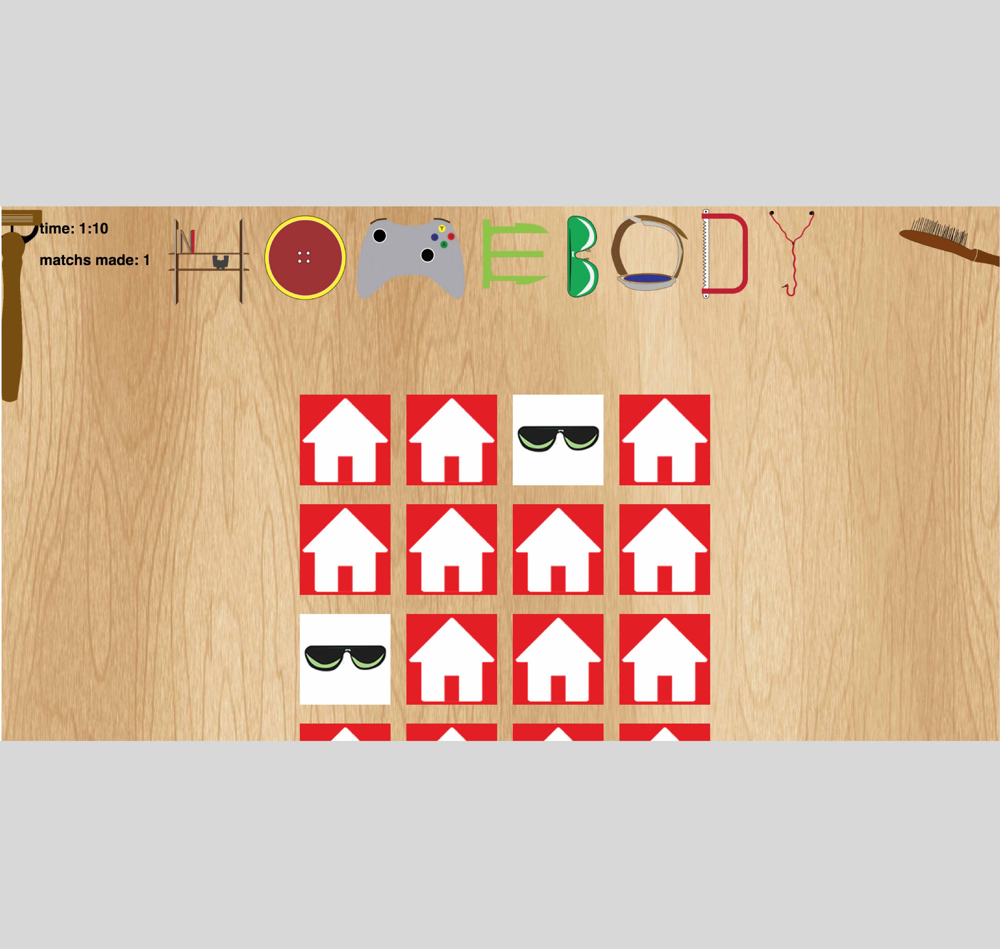

A responsive webpage that I created, using HTML, CSS, JavaScrpt and jQuery.
A jumping snowball game that I built using HTML5 Canvas and programmed it using javascript and jQuery. Designed it in phtoshop and illustrator.
My first interactive web game that I built using JavaScript. It is a memory game and counts your time and number of flips as well. Designed it in illustrator.